2.3.5 Using Atmospheric Effects

|
|
2.3.4 Advanced Texture Options |
POV-Ray 3.6 for UNIX documentation 2.3.5 Using Atmospheric Effects |
2.3.6 Simple Media Tutorial |
|
POV-Ray offers a variety of atmospheric effects, i. e. features that affect the background of the scene or the air by which everything is surrounded.
It is easy to assign a simple color or a complex color pattern to a virtual sky sphere. You can create anything from a cloud free, blue summer sky to a stormy, heavy clouded sky. Even starfields can easily be created.
You can use different kinds of fog to create foggy scenes. Multiple fog layers of different colors can add an eerie touch to your scene.
A much more realistic effect can be created by using an atmosphere, a constant fog that interacts with the light coming from light sources. Beams of light become visible and objects will cast shadows into the fog.
Last but not least you can add a rainbow to your scene.
The background feature is used to assign a color to all rays that do not hit any
object. This is done in the following way.
camera {
location <0, 0, -10>
look_at <0, 0, 0>
}
background { color rgb <0.2, 0.2, 0.3> }
sphere {
0, 1
pigment { color rgb <0.8, 0.5, 0.2> }
}
The background color will be visible if a sky sphere is used and if some translucency remains after all sky sphere pigment layers are processed.
The sky_sphere can be used to easily create a cloud covered sky, a nightly star sky
or whatever sky you have in mind.
In the following examples we will start with a very simple sky sphere that will get more and more complex as we add new features to it.
Beside the single color sky sphere that is covered with the background feature the simplest sky sphere is a color gradient. You may have noticed that the color of the sky varies with the angle to the earth's surface normal. If you look straight up the sky normally has a much deeper blue than it has at the horizon.
We want to model this effect using the sky sphere as shown in the scene skysph1.pov below.
#include "colors.inc"
camera {
location <0, 1, -4>
look_at <0, 2, 0>
angle 80
}
light_source { <10, 10, -10> White }
sphere {
2*y, 1
pigment { color rgb <1, 1, 1> }
finish { ambient 0.2 diffuse 0 reflection 0.6 }
}
sky_sphere {
pigment {
gradient y
color_map {
[0 color Red]
[1 color Blue]
}
scale 2
translate -1
}
}
The interesting part is the sky sphere statement. It contains a pigment that describes the look of the sky sphere. We want to create a color gradient along the viewing angle measured against the earth's surface normal. Since the ray direction vector is used to calculate the pigment colors we have to use the y-gradient.
The scale and translate transformation are used to map the points derived from the direction vector to the right
range. Without those transformations the pattern would be repeated twice on the sky sphere. The scale
statement is used to avoid the repetition and the translate -1 statement moves the
color at index zero to the bottom of the sky sphere (that is the point of the sky sphere you will see if you look
straight down).
After this transformation the color entry at position 0 will be at the bottom of the sky sphere, i. e. below us, and the color at position 1 will be at the top, i. e. above us.
The colors for all other positions are interpolated between those two colors as you can see in the resulting image.
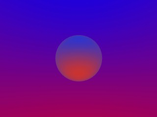
If you want to start one of the colors at a specific angle you will first have to convert the angle to a color map
index. This is done by using the formula color_map_index = (1 - cos(angle)) / 2 where the angle is
measured against the negated earth's surface normal. This is the surface normal pointing towards the center of the
earth. An angle of 0 degrees describes the point below us while an angle of 180 degrees represents the zenith.
In POV-Ray you first have to convert the degree value to radians
as it is shown in the following example.
sky_sphere {
pigment {
gradient y
color_map {
[(1-cos(radians( 30)))/2 color Red]
[(1-cos(radians(120)))/2 color Blue]
}
scale 2
translate -1
}
}
This scene uses a color gradient that starts with a red color at 30 degrees and blends into the blue color at 120 degrees. Below 30 degrees everything is red while above 120 degrees all is blue.
In the following example we will create a sky with a red sun surrounded by a red color halo that blends into the dark blue night sky. We will do this using only the sky sphere feature.
The sky sphere we use is shown below. A ground plane is also added for greater realism (skysph2.pov).
sky_sphere {
pigment {
gradient y
color_map {
[0.000 0.002 color rgb <1.0, 0.2, 0.0>
color rgb <1.0, 0.2, 0.0>]
[0.002 0.200 color rgb <0.8, 0.1, 0.0>
color rgb <0.2, 0.2, 0.3>]
}
scale 2
translate -1
}
rotate -135*x
}
plane {
y, 0
pigment { color Green }
finish { ambient .3 diffuse .7 }
}
The gradient pattern and the transformation inside the pigment are the same as in the example in the previous section.
The color map consists of three colors. A bright, slightly yellowish red that is used for the sun, a darker red for the halo and a dark blue for the night sky. The sun's color covers only a very small portion of the sky sphere because we do not want the sun to become too big. The color is used at the color map values 0.000 and 0.002 to get a sharp contrast at value 0.002 (we do not want the sun to blend into the sky). The darker red color used for the halo blends into the dark blue sky color from value 0.002 to 0.200. All values above 0.200 will reveal the dark blue sky.
The rotate -135*x statement is used to rotate the sun and the complete sky sphere to its final
position. Without this rotation the sun would be at 0 degrees, i.e. right below us.
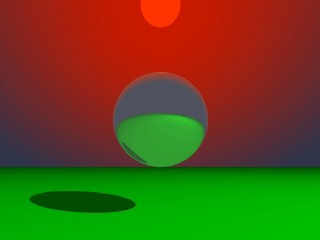
Looking at the resulting image you will see what impressive effects you can achieve with the sky sphere.
To further improve our image we want to add some clouds by adding a second pigment. This new pigment uses the bozo pattern to create some nice clouds. Since it lays on top of the other pigment it needs some transparent colors in the color map (look at entries 0.5 to 1.0).
sky_sphere {
pigment {
gradient y
color_map {
[0.000 0.002 color rgb <1.0, 0.2, 0.0>
color rgb <1.0, 0.2, 0.0>]
[0.002 0.200 color rgb <0.8, 0.1, 0.0>
color rgb <0.2, 0.2, 0.3>]
}
scale 2
translate -1
}
pigment {
bozo
turbulence 0.65
octaves 6
omega 0.7
lambda 2
color_map {
[0.0 0.1 color rgb <0.85, 0.85, 0.85>
color rgb <0.75, 0.75, 0.75>]
[0.1 0.5 color rgb <0.75, 0.75, 0.75>
color rgbt <1, 1, 1, 1>]
[0.5 1.0 color rgbt <1, 1, 1, 1>
color rgbt <1, 1, 1, 1>]
}
scale <0.2, 0.5, 0.2>
}
rotate -135*x
}
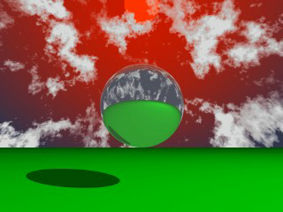
The sky sphere has one drawback as you might notice when looking at the final image (skysph3.pov). The
sun does not emit any light and the clouds will not cast any shadows. If you want to have clouds that cast shadows you
will have to use a real, large sphere with an appropriate texture and a light source somewhere outside the sphere.
You can use the fog feature to add fog of two different types to your scene:
constant fog and ground fog. The constant fog has a constant density everywhere while the ground fog's density
decreases as you move upwards.
The usage of both fog types will be described in the next sections in detail.
The simplest fog type is the constant fog that has a constant density in all locations. It is specified by a distance
keyword which actually describes the fog's density and a fog color.
The distance value determines the distance at which 36.8% of the background is still visible (for a more detailed explanation of how the fog is calculated read the reference section "Fog").
The fog color can be used to create anything from a pure white to a red, blood-colored fog. You can also use a black fog to simulate the effect of a limited range of vision.
The following example will show you how to add fog to a simple scene (fog1.pov).
#include "colors.inc"
camera {
location <0, 20, -100>
}
background { color SkyBlue }
plane {
y, -10
pigment {
checker color Yellow color Green
scale 20
}
}
sphere {
<0, 25, 0>, 40
pigment { Red }
finish { phong 1.0 phong_size 20 }
}
sphere {
<-100, 150, 200>, 20
pigment { Green }
finish { phong 1.0 phong_size 20 }
}
sphere {
<100, 25, 100>, 30
pigment { Blue }
finish { phong 1.0 phong_size 20 }
}
light_source { <100, 120, 40> color White }
fog {
distance 150
color rgb<0.3, 0.5, 0.2>
}
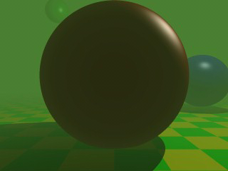
According to their distance the spheres in this scene more or less vanish in the greenish fog we used, as does the checkerboard plane.
If you want to make sure that the background does not completely vanish in the fog you can set the transmittance channel of the fog's color to the amount of background you always want to be visible.
Using as transmittance value of 0.2 as in
fog {
distance 150
color rgbt<0.3, 0.5, 0.2, 0.2>
}
the fog's translucency never drops below 20% as you can see in the resulting image (fog2.pov).
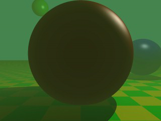
The greenish fog we have used so far does not filter the light passing through it. All it does is to diminish the
light's intensity. We can change this by using a non-zero filter channel in the fog's color (fog3.pov).
fog {
distance 150
color rgbf<0.3, 0.5, 0.2, 1.0>
}
The filter value determines the amount of light that is filtered by the fog. In our example 100% of the light passing through the fog will be filtered by the fog. If we had used a value of 0.7 only 70% of the light would have been filtered. The remaining 30% would have passed unfiltered.
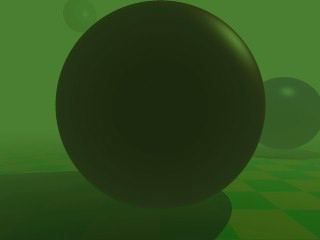
You will notice that the intensity of the objects in the fog is not only diminished due to the fog's color but that the colors are actually influenced by the fog. The red and especially the blue sphere got a green hue.
In order to make our somewhat boring fog a little bit more interesting we can add some turbulence, making it look
like it had a non-constant density (fog4.pov).
fog {
distance 150
color rgbf<0.3, 0.5, 0.2, 1.0>
turbulence 0.2
turb_depth 0.3
}
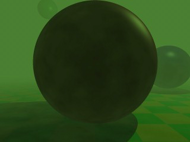
The turbulence keyword is used to specify the amount of turbulence used while the turb_depth
value is used to move the point at which the turbulence value is calculated along the viewing ray. Values near zero
move the point to the viewer while values near one move it to the intersection point (the default value is 0.5). This
parameter can be used to avoid noise that may appear in the fog due to the turbulence (this normally happens at very
far away intersection points, especially if no intersection occurs, i. e. the background is hit). If this happens just
lower the turb_depth value until the noise vanishes.
You should keep in mind that the actual density of the fog does not change. Only the distance-based attenuation value of the fog is modified by the turbulence value at a point along the viewing ray.
The much more interesting and flexible fog type is the ground fog, which is selected with the fog_type
statement. Its appearance is described with the fog_offset and fog_alt
keywords. The fog_offset specifies the height, i. e. y value, below which the fog has a constant density
of one. The fog_alt keyword determines how fast the density of the fog will approach zero as one moves
along the y axis. At a height of fog_offset+fog_alt the fog will have a density of 25%.
The following example (fog5.pov) uses a ground fog which has a constant density below y=25 (the center
of the red sphere) and quickly falls off for increasing altitudes.
fog {
distance 150
color rgbf<0.3, 0.5, 0.2, 1.0>
fog_type 2
fog_offset 25
fog_alt 1
}
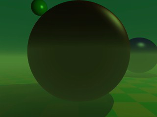
It is possible to use several layers of fog by using more than one fog statement in your scene file. This is quite useful if you want to get nice effects using turbulent ground fogs. You could add up several, differently colored fogs to create an eerie scene for example.
Just try the following example (fog6.pov).
fog {
distance 150
color rgb<0.3, 0.5, 0.2>
fog_type 2
fog_offset 25
fog_alt 1
turbulence 0.1
turb_depth 0.2
}
fog {
distance 150
color rgb<0.5, 0.1, 0.1>
fog_type 2
fog_offset 15
fog_alt 4
turbulence 0.2
turb_depth 0.2
}
fog {
distance 150
color rgb<0.1, 0.1, 0.6>
fog_type 2
fog_offset 10
fog_alt 2
}
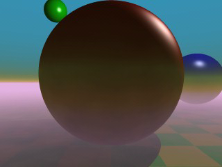
You can combine constant density fogs, ground fogs, filtering fogs, non-filtering fogs, fogs with a translucency threshold, etc.
Whenever you use the fog feature and the camera is inside a non-hollow object you will not get any fog effects. For a detailed explanation why this happens see "Empty and Solid Objects".
In order to avoid this problem you have to make all those objects hollow by either making sure the camera is
outside these objects (using the inverse keyword) or by adding the hollow
to them (which is much easier).
The rainbow feature can be used to create rainbows and maybe other more strange
effects. The rainbow is a fog like effect that is restricted to a cone-like volume.
The rainbow is specified with a lot of parameters: the angle under which it is visible, the width of the color band, the direction of the incoming light, the fog-like distance based particle density and last but not least the color map to be used.
The size and shape of the rainbow are determined by the angle and width
keywords. The direction keyword is used to set the direction of
the incoming light, thus setting the rainbow's position. The rainbow is visible when the angle between the direction
vector and the incident light direction is larger than angle-width/2 and smaller than angle+width/2.
The incoming light is the virtual light source that is responsible for the rainbow. There need not be a real light source to create the rainbow effect.
The rainbow is a fog-like effect, i.e. the rainbow's color is mixed with the background color based on the distance to the intersection point. If you choose small distance values the rainbow will be visible on objects, not just in the background. You can avoid this by using a very large distance value.
The color map is the crucial part of the rainbow since it contains all the colors that normally can be seen in a rainbow. The color of the innermost color band is taken from the color map entry 0 while the outermost band is take from entry 1. You should note that due to the limited color range any monitor can display it is impossible to create a real rainbow. There are just some colors that you cannot display.
The filter channel of the rainbow's color map is used in the same way as with fogs. It determines how much of the light passing through the rainbow is filtered by the color.
The following example shows a simple scene with a ground plane, three spheres and a somewhat exaggerated rainbow (rainbow1.pov).
#include "colors.inc"
camera {
location <0, 20, -100>
look_at <0, 25, 0>
angle 80
}
background { color SkyBlue }
plane { y, -10 pigment { color Green } }
light_source { <100, 120, 40> color White }
// declare rainbow's colors
#declare r_violet1 = color rgbf<1.0, 0.5, 1.0, 1.0>;
#declare r_violet2 = color rgbf<1.0, 0.5, 1.0, 0.8>;
#declare r_indigo = color rgbf<0.5, 0.5, 1.0, 0.8>;
#declare r_blue = color rgbf<0.2, 0.2, 1.0, 0.8>;
#declare r_cyan = color rgbf<0.2, 1.0, 1.0, 0.8>;
#declare r_green = color rgbf<0.2, 1.0, 0.2, 0.8>;
#declare r_yellow = color rgbf<1.0, 1.0, 0.2, 0.8>;
#declare r_orange = color rgbf<1.0, 0.5, 0.2, 0.8>;
#declare r_red1 = color rgbf<1.0, 0.2, 0.2, 0.8>;
#declare r_red2 = color rgbf<1.0, 0.2, 0.2, 1.0>;
// create the rainbow
rainbow {
angle 42.5
width 5
distance 1.0e7
direction <-0.2, -0.2, 1>
jitter 0.01
color_map {
[0.000 color r_violet1]
[0.100 color r_violet2]
[0.214 color r_indigo]
[0.328 color r_blue]
[0.442 color r_cyan]
[0.556 color r_green]
[0.670 color r_yellow]
[0.784 color r_orange]
[0.900 color r_red1]
}
}
Some irregularity is added to the color bands using the jitter
keyword.
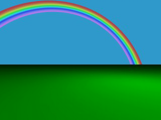
The rainbow in our sample is much too bright. You will never see a rainbow like this in reality. You can decrease the rainbow's colors by decreasing the RGB values in the color map.
The result we have so far looks much too bright. Just reducing the rainbow's color helps but it is much better to increase the translucency of the rainbow because it is more realistic if the background is visible through the rainbow.
We can use the transmittance channel of the colors in the color map to specify a minimum translucency, just like we
did with the fog. To get realistic results we have to use very large transmittance values as you can see in the
following example (rainbow2.pov).
rainbow {
angle 42.5
width 5
distance 1.0e7
direction <-0.2, -0.2, 1>
jitter 0.01
color_map {
[0.000 color r_violet1 transmit 0.98]
[0.100 color r_violet2 transmit 0.96]
[0.214 color r_indigo transmit 0.94]
[0.328 color r_blue transmit 0.92]
[0.442 color r_cyan transmit 0.90]
[0.556 color r_green transmit 0.92]
[0.670 color r_yellow transmit 0.94]
[0.784 color r_orange transmit 0.96]
[0.900 color r_red1 transmit 0.98]
}
}
The transmittance values increase at the outer bands of the rainbow to make it softly blend into the background.
The resulting image looks much more realistic than our first rainbow.
Currently our rainbow has a circular shape, even though most of it is hidden below the ground plane. You can easily
create a rainbow arc by using the arc_angle keyword with an angle
below 360 degrees.
If you use arc_angle 120 for example you will get a rainbow arc that abruptly vanishes at the arc's
ends. This does not look good. To avoid this the falloff_angle
keyword can be used to specify a region where the arc smoothly blends into the background.
As explained in the rainbow's reference section (see "Rainbow") the arc extends from
-arc_angle/2 to arc_angle/2 while the blending takes place from -arc_angle/2 to -falloff_angle/2 and falloff_angle/2
to arc_angle/2. This is the reason why the falloff_angle has to be smaller or equal to the arc_angle.
In the following examples we use an 120 degrees arc with a 45 degree falloff region on both sides of the arc (rainbow3.pov).
rainbow {
angle 42.5
width 5
arc_angle 120
falloff_angle 30
distance 1.0e7
direction <-0.2, -0.2, 1>
jitter 0.01
color_map {
[0.000 color r_violet1 transmit 0.98]
[0.100 color r_violet2 transmit 0.96]
[0.214 color r_indigo transmit 0.94]
[0.328 color r_blue transmit 0.92]
[0.442 color r_cyan transmit 0.90]
[0.556 color r_green transmit 0.92]
[0.670 color r_yellow transmit 0.94]
[0.784 color r_orange transmit 0.96]
[0.900 color r_red1 transmit 0.98]
}
}
The arc angles are measured against the rainbows up direction which can be specified using the up
keyword. By default the up direction is the y-axis.
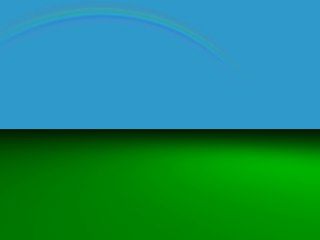
We finally have a realistic looking rainbow arc.
|
|
2.3.4 Advanced Texture Options | 2.3.5 Using Atmospheric Effects | 2.3.6 Simple Media Tutorial |
|